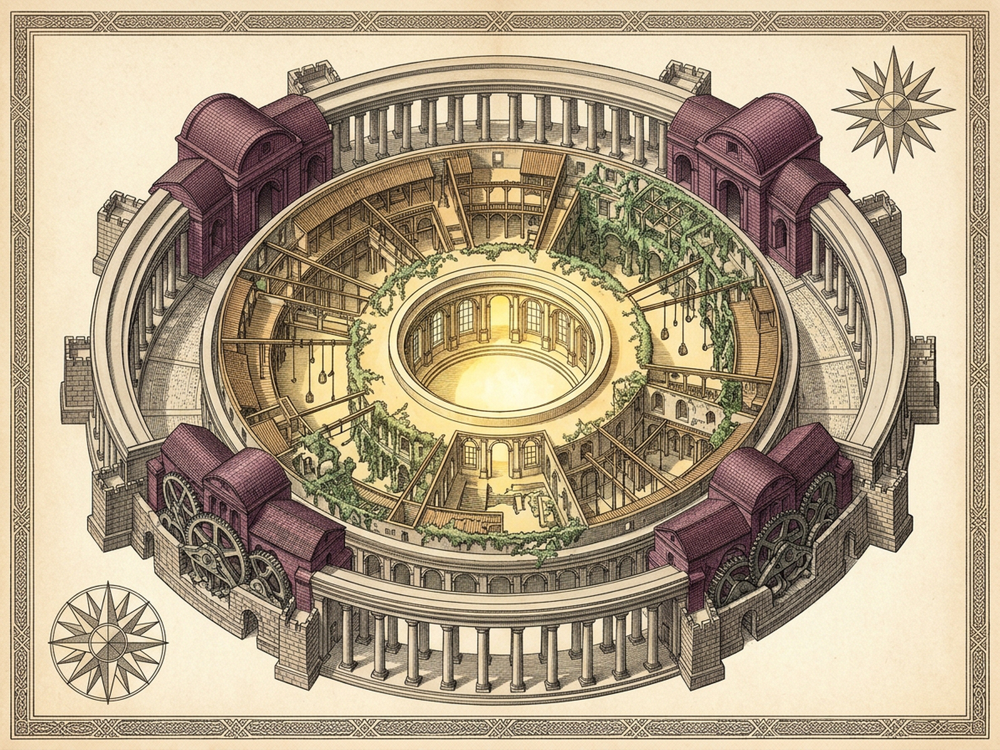
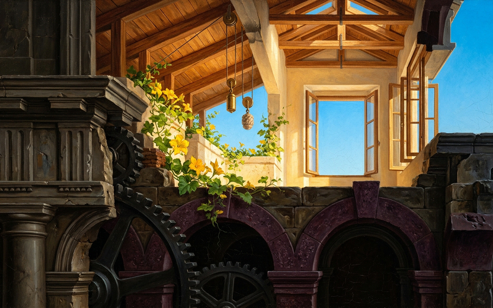

S0 · Unjust
S1 · Just
S2 · Malignant Speck
S3 · Unruled Grain
S4 · Unjust
S5 · Just
S6 · Unjust
S7 · Just
S8 · Unjust
S9 · Deep Grain
Shell 0 · Unjust
Open Wide the Windows [W]
Peel Triglyphs [F]
Cog Torque: 0.76
Bath Intrigue: 0.85
Triglyphs & Abaci
Iron Gears
Porphyry Baths
Sycophants
Solemn Doric triglyphs and heavy abaci conceal nine meat-grinding iron gears above steaming porphyry and amethyst bathhouses.
Dive Seed [D / +]
Surface [U / -]
Instant / Succ [I / T]
Mute [M]
Plates [P]
Reset [R]
All future Berenices wrapped inside this single instant · Epoch +0
Overt Unjust Berenice — Scroll or click nested seeds to dive
Unjust ⊃ Just ⊃ Malignant ⊃ Unruled
Listen for Commas & Parentheses [C]
Wires & Tank
Commas & ( )
Rice-Celery Soup
Squash Flowers
Malignant Speck
Window Grain
Garret Joiner · Just Syntax
Ease the brass bead along the under-stair wire, gently (so the overhead water-tank counterweight settles without a tremor), before the watch passes below.
Royal Archival Plates — Concentric Survey of Berenice
Loupe Zoom [Z]
Close [Esc]
COMPLETE — Royal Archival Plates Verified on Disk: map.png (1600×1200) · image.png (1600×1000) · map.svg (1600×1200)
Plate I · Concentric Cartographic Plan (map.png)

Plate II · Entablature & Garret Cross-Section (image.png)
